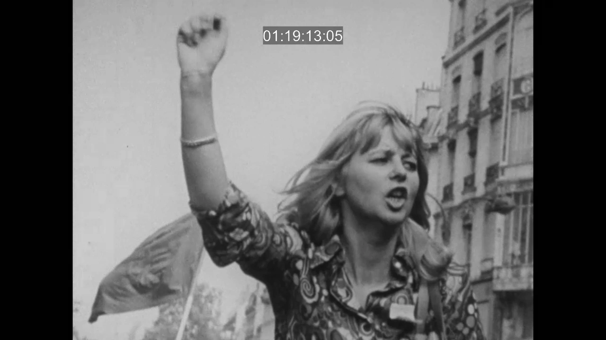
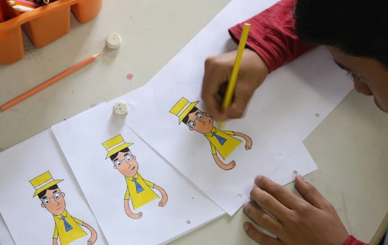
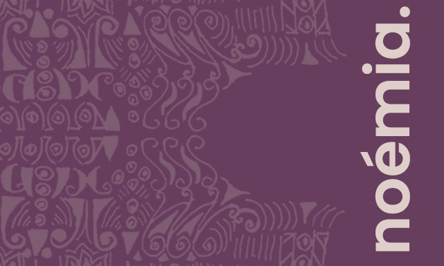

Durante uma viagem a Paris com a família de seu noivo, um
roteirista nostálgico se
vê misteriosamente voltando para a década de 1920 todos os dias à meia-noite.
27 NOV 2024
Lejos de África
Filme
Lejos de África
27 NOV 2024
18:30
Sala Luís de Pina
Uma menina branca e uma negra iniciam uma amizade na colônia
espanhola da Guiana
Equatorial dos anos 50. A relação multicultural leva as duas a explorarem além das suas
fronteiras.

29 NOV 2024
Cinétracts
Filme
Cinétracts
29 NOV 2024
18:30
Sala M. Félix Ribeiro
Uma série de 41 curtas documentários silenciosos dirigidas
(sem
crédito) por
cineastas politicamente comprometidos para os eventos de 68 de maio.

14 DEZ 2024
Técnicas de Cinema de Animação
Ofícina
Técnicas de Cinema de Animação
14 DEZ 2024
10:30
Salão Foz
Posso fazer um filme em animação? Nesta
oficina vamos perceber que podemos fazer animação de diversas formas.

Até 16 DEZ 2024
Noémia.
Exposição
Noémia.
ATÉ 16 DEZ 2024
14h00 - 19h30
Sala dos Carvalhos
Para noémia., desarrumámos o arquivo pessoal de Noémia
Delgado e
insinuamos a figura poligonal da realizadora de MÁSCARAS, num percurso avesso à linearidade
e
errante como foi a sua carreira.